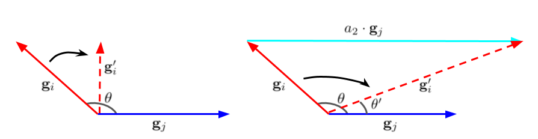
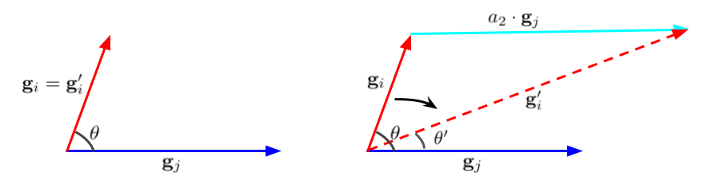

Nudge each task pair back to its own healthy level of cooperation, not to zero.
A task's gradient is the direction in which its loss (the error score it is trying to lower) rises fastest, so training steps the other way. The cosine of two gradients says how aligned they are, ignoring length: 1 for the same way, 0 at a right angle, −1 for opposite. Two tasks fight when it is negative. PCGrad (projecting conflicting gradients) cuts every fight to exactly zero. GradVac asks whether zero is the right target: each pair of tasks gets its own target cosine, learned from how that pair usually cooperates, and sagging pairs are nudged back up to it.
On this page
PCGrad's rule is all-or-nothing. If the cosine is negative, it projects one gradient until the cosine is zero, removing the part that points against the other gradient (gradient surgery); otherwise it leaves the pair untouched. Hidden inside the rule is a quieter assumption. Every pair gets the same target, zero. No questions asked. The rule never asks what the pair's relationship was before the fight, or whether these two tasks are friends or strangers.
That is a strange thing to assume about one translation model trained on many languages at once, where each language pair
(a translation direction, such as English to French) is a task, with very different amounts of training data per pair,
and some pairs related while others are distant. Some task pairs genuinely
cooperate. When one of them dips into a fight, pulling it only to zero stops the fight but never restores the friendship. The
question is whether we can tell the difference, and the answer turns out to be yes, if we keep a
little memory of what each pair normally looks like.
Here is the intuition. Surgery happens after the fight breaks out. A vaccine acts earlier. GradVac nudges a pair that fights, and also a pair that still cooperates but has sagged below its healthy level, and it lifts either one back to that level. That is where the name comes from: Gradient Vaccine, GradVac. With every pair's target at zero, GradVac's nudge becomes PCGrad's cut.
The GradVac authors started by watching instead of fixing. They trained two translation models on many languages at once, one translating into English and one out of English, and at regular checkpoints (saved points in training where the model is paused and inspected) they measured the cosine between every pair of task gradients. Three things showed up.
So every task pair has its own natural level of cooperation: strongly positive for related tasks, near zero or even below zero for distant ones.
Many language pairs had positive cosines, so PCGrad's cut fired on only a small share of training steps. And when it fires, its target of zero stops short of the pair's healthy positive level. PCGrad can stop a fight, but it cannot notice that two friends have started cooperating less than they used to.
GradVac keeps a running estimate of what “normal” looks like for each pair, a slow running average of the cosines seen so far. Each batch, the small group of training examples used for one step, nudges the pair's target only a small fraction of the way toward the newly measured cosine, about one percent, so one noisy batch cannot yank it around. That small fraction is beta, written β, the averaging speed: the number that decides how fast the target follows each new measurement. That target is the “normal” the pair is held to.
The targets are kept separately for each group of parameters (the numbers training adjusts). In the best-scoring setting from the authors' search over settings (described in “When GradVac helps and when PCGrad is enough”), each group is one layer. Alignment differs from one part of the network to another, and one target for the whole model would average those differences away.
Write gi for task i's gradient and gj for task j's, where i and j are any two tasks; the subscript ij marks a value that belongs to that pair. Here is the running target update as an equation.
Whenever the current cosine dips below this target, GradVac nudges one task's gradient toward the other's by mixing in a little of the other gradient. The dose is exactly the amount of gj that, added to gi, brings the pair back to its own target in one shot, scaled to the arrows' sizes. The added dose turns gi and changes its length too. If the pair is as aligned as usual, the dose is zero and nothing happens. If alignment starts to sag, the early warning sign of a fight that has not happened yet, the gradient gets a small dose before the cosine can turn negative. Target zero is surgery; any other target is the vaccine.
Here is the whole edit as equations.
Here is one GradVac training step as code, for K tasks.
# grads = [g_1..g_K]; target[i,j] = running target cosine, init 0
g = [x.copy() for x in grads] # edit copies, keep the originals
for i in edit: # the tasks GradVac edits
for j in np.random.permutation(K): # other tasks, random order
if i == j: continue
cos_ij = g[i] @ grads[j] / (norm(g[i]) * norm(grads[j])) # vs task j's original
if cos_ij < target[i,j]: # sagged below their normal?
a = solve_for_cosine(g[i], grads[j], target[i,j]) # restoring blend
g[i] = g[i] + a * grads[j] # nudge, not a full cut
target[i,j] = (1 - beta) * target[i,j] + beta * cos_ij # after the check
d = sum(g) # combine the edited gradientsThe listing follows the equations in “Each pair gets its own target”. The outer loop runs over the tasks GradVac edits (every task, or in the paper's best setting only the low-resource languages). A pair that sagged below its target gets a dose a of the other gradient instead of a cut, and the target updates after the check. Only copies are edited, so every pair is measured against task j's original gradient.
Here is one step on a single pair in a two-dimensional toy, in five parts. Like the tool in “GradVac nudges gradients back to their targets”, it uses g1 for gi and g2 for gj, and only task 1 is edited. Real training repeats it for every edited task, every other task and every layer, with a separate target per layer.
gi task i's gradientgj task j's gradientcos(gi, gj) this batch's cosine, how aligned the two gradients are nowcos(gi, gj) this batch's cosine, how aligned the two gradients are now, written cos for short in the nudge amountφij this batch's cosine cos(gi, gj), the value the target moves towardφij the pair's running target alignmenta the nudge amount, drawn as the purple dose arrow a×g2β the averaging speed, 0.01 heregi′ task i's gradient after the edit, the red g1′ arrow in the diagramd the combined gradient, the green arrow‖gi‖, ‖gj‖ the gradient lengths√(1−cos²) the sine of the pair's angle√(1−φij²) the sine of the target angle< less than:= becomes, updated toOne noisy batch barely moves the running target, so the nudge aims at the pair's long-run level.
Here are two cases. Case (a) is a pair that is really fighting, negative cosine: PCGrad projects one gradient onto the plane at a right angle to the other, so the pair lands at exactly zero, while GradVac restores the pair to its own target. Case (b) is a pair that agrees, positive cosine, but has sagged below its target: PCGrad never fires, and GradVac nudges it back up while the two still cooperate. In the paper's drawing, a2 is this page's nudge amount a, and θ and θ′ are the pair's angle before and after the edit.

Case (a), negative cosine, with PCGrad on the left and GradVac on the right.on top and GradVac below. The paper sets them side by side, PCGrad on the left.

Case (b), positive cosine, with PCGrad on the left and GradVac on the right.on top and GradVac below.
Rebuilt from Figure 5 of Wang et al. (ICLR 2021). arXiv:2010.05874
The verbatim caption of Figure 5 reads “Comparing PCGrad (left) with GradVac (right) in two cases. (a): For negative similarity, both methods are effective but GradVac can utilize adaptive objectives between different tasks. (b): For positive similarity, only GradVac is active while PCGrad stays ‘idle’.”
GradVac restores each pair to its own historical target by adding just enough of the other gradient to land the cosine exactly on it.
A target of 0 gives exactly PCGrad's cut, and a target at or below the pair's cosine gives no nudge at all.
Each translation experiment trains two models, one into English and one out of English, each learning many language pairs as separate tasks. GradVac is scored on translation quality against the same models trained plainly, with no balancing method.
GradVac also has a free side product. Logging the pairwise cosines costs a few lines of code and gives a map of how the tasks relate as training goes on, which is why “Diagnose your failure mode first” in The Multitask Field Guide lists the pairwise cosines among the three things to log. Even if you never vaccinate a single pair, watching the cosines is worth it.
The authors' search over settings on the small WMT setup found three choices that work well. Use the middle averaging speed, 0.01 (of 0.1, 0.01 and 0.001), which averages roughly the last 100 steps. Keep one target per layer, since alignment varies from layer to layer. And nudge only the low-resource languages, which scored better than editing every task or only the high-resource ones. The large-dataset results in “Restoring historical targets beats forcing zero on average” use this setting; the authors read the high-resource gains there as the low-resource nudges easing interference.
K gradient-computation passes (backward passes, the passes that compute the gradients) and K stored gradients per step, where K is the number of tasks. With many tasks
that is most of your budget. A possible remedy, untested for PCGrad and GradVac, is the subsampling trick of
CAGrad-Fast on the CAGrad page: compute only a random handful of task gradients each step, plus one
for the average loss. GradVac's running targets, one per pair per layer, are tiny next to the gradients.
GradVac acts at the balance stage; clipping and the optimizer only ever see its nudged sum.
# raise each pair's cosine to its
# target; write_grads sets .grad
write_grads(shared,
gradvac(grads, targets))
# cosines: this step's cosine per
# pair. The targets are GradVac's
# only state: log both
targets = (0.99 * targets
+ 0.01 * cosines)
# momentum and Adam's per-axis scale
# can still tilt the step
opt.step()Gradient Balancing Inside the Training Loop shows the optimizer's effect in “Adam's step comes from an average of past balanced gradients” and “The per-axis scale tilts each step off the balanced direction”.
The two weighting methods, the volume knobs that learn each task's loss weight (GradNorm and Uncertainty Weighting), and the four gradient methods, PCGrad, GradVac, CAGrad, and MGDA, which stops at a Pareto-stationary point (where no small step lowers every task's loss at once), side by side:
| Method | The question it answers |
|---|---|
| GradNorm | How loud should each task be, to keep progress balanced? (learned, driven by training dynamics) |
| Uncertainty Weighting | How loud should each task be, given how noisy it inherently is? (learned, driven by the data) |
| PCGrad | How should the directions be edited so tasks stop fighting? |
| GradVac (this page) | How should each pair of tasks be nudged back to the agreement level where it learns best? |
| CAGrad | How do we protect the worst-off task and stay near the average, with a guarantee? |
| MGDA | What direction helps every task at once, and where does the run stop? |
GradVac edits the gradient directions gently. Each pair is nudged back to its own healthy level, never forced to a universal zero. But nothing on this page promises anything about the task that ends up worst off. What if each step favored the worst-off task while still guaranteeing that training settles where the average loss is flat (a stationary point of the average loss)? That is the CAGrad page's question.